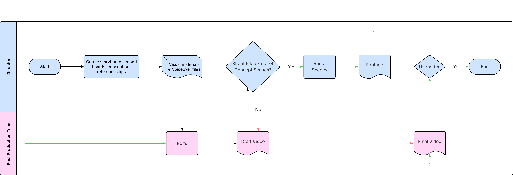
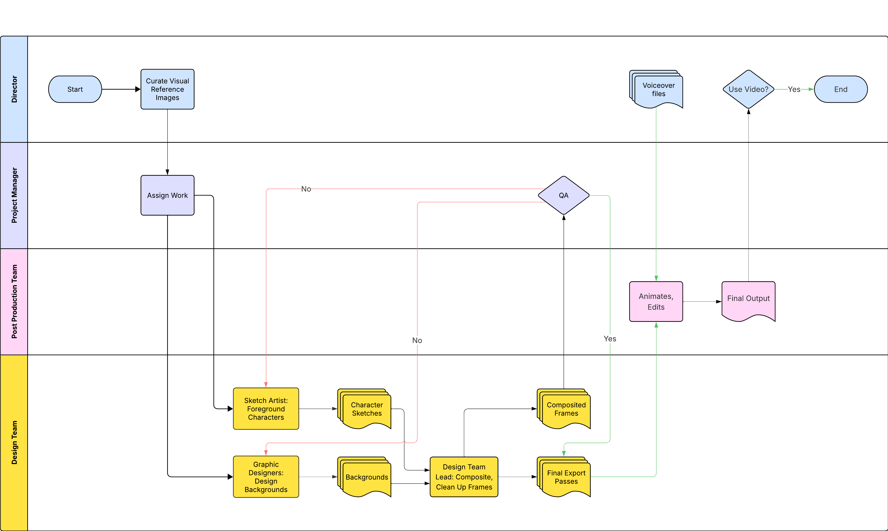
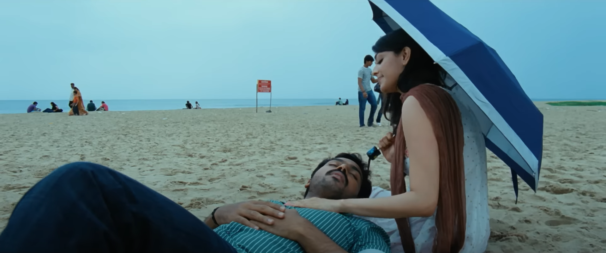
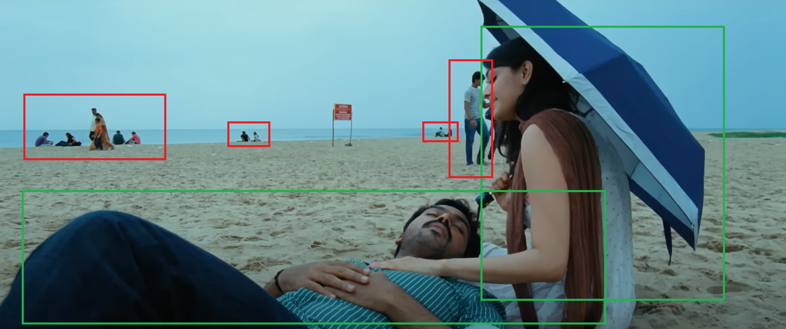

Context
As part of ongoing support for directors (with services like online pitch deck sites and custom presentations), I led the development of a scalable, AI-assisted pitch video workflow. The goal: make pitching story concepts to producers easy, fast, and visually clear for directors; directly linking creative steps with sharable, impactful outputs.
However, If a pitch video for an Indian movie/tv show/creative IP was made , it would have been likely done in the following manner:

What We Did
Mapped a service blueprint
Documented the end-to-end journey, from the director’s initial references through layered asset creation and team handoffs to the final pitch video delivered for producer presentations.
Clarified customer and team roles
Outlined where directors, editor, and each design team member participated; ensuring everyone knew their actions, deliverables, and when to collaborate.
Built for transparency and reuse
The blueprint made handoffs, export conventions, and feedback loops explicit, both for real-time client work and as a training/onboarding tool for new design team members.
Proposed Service Flow Diagram

Process Snapshot
Director + Editor: Select visual references and define tone/pacing.

Design Team Lead: Defined work roles and assignments for designers between asset breakdown and sketching/generation.

Designers: Sketch Artist make the characters and Graphic Designers generate backgrounds/foreground elements using Gen-AI, including rain, medical equipment (for the intial project).
Design team Lead: Composits various passes to assess Quality, then provides Export organized, ready-to-animate file sets to the editor.
Editor: Assembles, animates, and helps director deliver a polished pitch video.